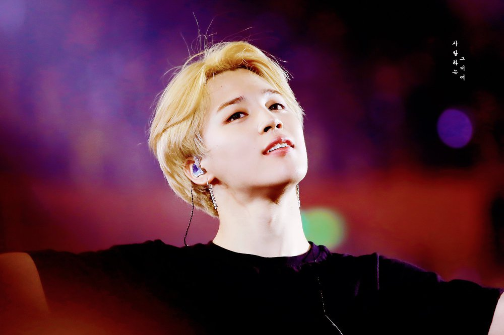

1. Jin Profile – The Oldest Member of BTS
Real Name : Kim Seok Jin
Stage Name : Jin
Position : Vocalist
Date of Birth : December 4, 1992
Religion : N/A
Ages : 25 years old
Weight : 63 kg (139 lbs)
Height : 179 cm (5’10” 1/2)
Zodiac : Sagittarius
Blood Type : O
Hobbies : Cooking, playing video games, and taking selcas
2. Suga Profile – The Sugar
Real Name : Min Yoon Gi
Stage Name : Suga
Position : Lead Rapper
Date of Birth : March 9, 1993
Religion : Christian/Catholic
Ages : 24 years old
Weight : 59 kg ( 130 lbs )
Height : 174 cm ( 5’8. 5 )
Zodiac : Pisces
Blood Type : O
Hobbies : Doing nothing when he has free time, taking photos, avoiding having to do work.
3. J-Hope Profile – The Mother of BTS
Real Name : Jung Ho Seok
Stage Name : J-Hope
Position : Lead Rapper and Main Dancer
Date of Birth : February 18, 1994
Religion : Non-religious
Ages : 23 years old
Weight : 65 kg (143 lbs)
Height : 177 cm (5’10”)
Zodiac : Aquarius
Blood Type : A
Hobbies : Listening to music and window shopping
4. Rap Monster Profile – Wild Rapper
Real Name : Kim Nam Joon
Stage Name : Rap Monster
Position : Main Rapper, Leader
Date of Birth : September 12, 1994
Religion : Atheist
Ages : 24 years old
Weight : 67 kg (147 lbs)
Height : 181 cm (5’11”)
Zodiac : Virgo
Blood Type : A
Hobbies : Surfing the web
5. Jimin Profile – The Perfect ABS

Real Name : Park Jimin
Stage Name : Jimin
Position : Lead Vocalist, Main Dancer
Date of Birth : October 13, 1995
Religion : N/A
Ages : 22 years old
Weight : 61 kg (134 lbs)
Height : 173,6 cm (5’8″ 3)
Zodiac : Libra
Blood Type : A
Hobbies : Relaxing whenever he gets a chance
More information
6. V Profile – 4D Personality
Real Name : Kim Tae Hyung
Stage Name : V
Position : Vocalist
Date of Birth : December, 30 1995
Religion : Christian
Ages : 22 years old
Weight : 62 kg (137 lbs)
Height : 178 cm (5’10”)
Zodiac : Capricorn
Blood Type : AB
Hobbies : Searching for music that no one listens to, going on the computer
More information
7. Jungkook Profile – Golden Maknae
Real Name : Jeon Jeong-Guk
Stage Name : Jungkook
Position : Main Vocalist, Lead Rapper, Sub Rapper, Center, Maknae
Date of Birth : September 1, 1997
Religion : Non-religious
Ages : 21 years old
Weight : 66 kg (145 lbs)
Height : 178 cm (5’10”)
Zodiac : Virgo
Blood Type : A
Hobbies : Drawing